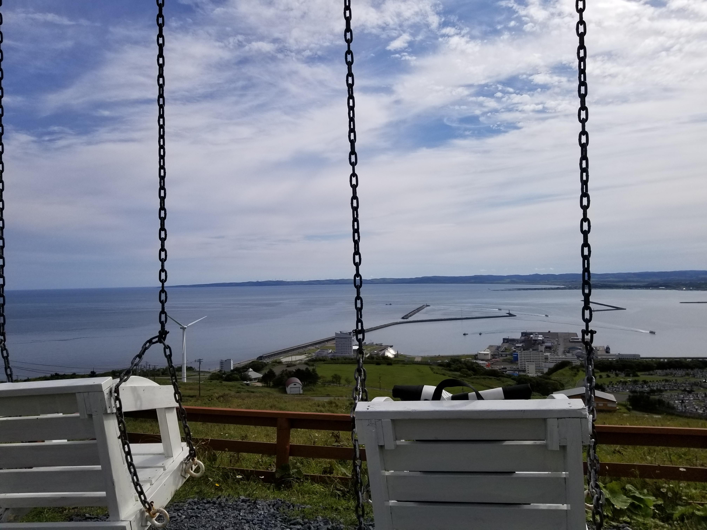

Kononote -Ko's Note & Portfolio-

Profile
胡 尤佳(Ko Yuka, Hu Youjia)
History
2013/04/01 京都府立南陽高等学校 普通科 入学
2016/03/31 京都府立南陽高等学校 普通科 卒業
2016/04/01 大阪府立大学 工学域 電気電子系学類 入学
2020/03/31 大阪府立大学 工学域 電気電子系学類 情報工学課程 卒業
2020/04/01 奈良先端科学技術大学院大学 先端科学技術研究科 先端科学技術専攻 情報科学領域 入学
2020/12/26 奈良先端科学技術大学院大学 先端科学技術研究科 先端科学技術専攻 情報科学領域 知能コミュニケーション研究室 在学
Research
Natural Language Processing, Speech Translation, Machine Translation, Speech Recognition
Coding Skills
Python
PyTorch, Pandas, Numpy
bash(ShellScript)
vim, tmux
C++
C
Java
HTML/CSS
Kotlin
R
MATLAB
Tool Skills
Git
kaldi
ESPnet
OpenNMT
Language Skills
Japanese
Native
English
2018/10/28 TOEIC Listening & Reading Test 835
Chinese
Daily conversation
Certifications
2018/10/28 TOEIC Listening & Reading Test 835
2020/06/04 PASTアルゴリズム実技検定 初級(Advanced Beginner Class)
Development Products
Android Counter

CLICKを押すと回数をカウントできます．
Language:Kotlin
My Favorite Things
AtCoder(2019/02-, Highest 882, Green), Piano, Guitar, Road bike, Touring, Camping, Hill climb, Running, Marathon(Fukuchiyama, Osaka, Nara)
My Favorite Places
けいはんな学研都市，NAIST，十三峠, 任意の県境と峠
Knowledge
Read Books
Contacts